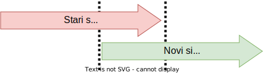
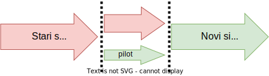
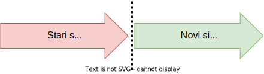
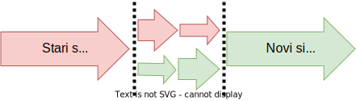

Licenca
To delo je na voljo pod pogoji slovenske licence Creative Commons 2.5:
priznanje avtorstva - nekomercialno - deljenje pod enakimi pogoji.
Celotna licenca je na voljo na spletu na naslovu http://creativecommons.org/licenses/by-nc-sa/2.5/si/. V skladu s to licenco je dovoljeno vsakemu uporabniku delo razmnoževati, distribuirati, javno priobčevati, dajati v najem in tudi predelovati, vendar samo v nekomercialne namene in ob pogoju, da navede avtorja oziroma avtorje in izdajatelja tega dela. Če uporabnik delo predela, kar pomeni, da ga spremeni, preoblikuje, prevede ali uporabi to delo v svojem delu, lahko predelavo dela ponudi na voljo le pod pogoji, ki so enaki pogojem iz te licence oziroma pod enako licenco.

Delovanje
Stopnja delovanja se začne, ko je končana stopnja testiranja in je podatkovna baza pripravljena za vsakodnevno uporabo. Uporabniki sistema začnejo upravljati sistem, nalagati podatke, brati poročila in podobno. Prej ali slej se neizogibno pojavijo težave. Načrtovalci morajo na tej stopnji skrbno upravljati obseg podatkovne baze, saj uporabniki običajno pričakujejo, da bodo izpolnjene vse njihove želje.
Slabim načrtovalcem podatkovnih baz se lahko zgodi, da projekt podaljšajo precej čez prvotno časovno oceno, situacija pa lahko postane tudi neprijetna, če obseg ni jasno opredeljen in dogovorjen. Lastniki projekta se bodo počutili izigrane, če njihove potrebe ne bodo izpolnjene, načrtovalci podatkovnih baz pa se bodo počutili preobremenjene in premalo plačane. Tudi če je obseg dobro voden, se bodo pojavile nove zahteve, ki vodijo v naslednjo stopnjo.
Kot smo že omenili je podatkovna baza običajno del sistema. Obstaja več načinov kako stari sistem (s staro podatkovno bazo) nadomestimo z novim sistemom (z novo podatkovno bazo).
Vzporedno izvajanje (ang. Parallel running) je način, pri katerem novi sistem deluje vzporedno s starim sistemom. To se lahko zgodi samo pri prehodu in ne pri začetni izvedbi. Oba sistema določeno časovno obdobje delujeta vzporedno. Ko smo prepričani, da novi sistem deuje brez napak, zaustavimo stari sistem. Ta način prehoda je najvarnejši in najmanj ranljiv, saj tudi v najslabšem primeru, ko novi sistem popolnoma odpove, ne bomo izgubili nobenih podatkov. Vendar to ne zahteva veliko dela le od vzdrževalcev sistema, temveč tudi od osebja organizacije, ki mora vse podatke vnašati v oba sistema.

Pilotno izvajanje (ang. Pilot running) je način, da preizkusimo nov sistem v majhnem obsegu, preden ga implementiramo v celoti. Običajno za pilotni projekt izberemo en oddelek organizacije. Ta oddelek nato začne uporabljati nov sistem.
Če je implementacija v tem oddelku uspešna, potem sistem implementiramo še na preostanek organizacije. To način prehoda je dober za velika podjetja in je dokaj varen, saj napaka v novem sistemu ne bo imela tako velikih učinkov. Prav tako je dokaj poceni.

Neposredna zamenjava (ang. Direct changeover) ali veliki pok (ang. Big bang) je način, ko stari sistem zaustavimo in takoj za tem zaženemo novi sistem. Pri tem za spremembo sistema porabimo minimalno količino časa – takšno spremembo sistema v organizaciji običajno opravimo preko konca tedna. Ta način zahteva najmanjšo količino dela, vendar pa lahko povzroči resne težave, če novi sistem ne deluje pravilno in posledično postane neuporaben.

Postopna pretvorba (ang. Phased conversion) je način, pri katerem v določenem časovnem obdobju novi sistem postopoma nadomešča stari sistem. Zaradi tega je novi sistem manj ranljiv za popolno odpoved kot pri neposredni zamenjavi. Vendar za postopno pretvorbo potrebujemo bistveno več časa in dela.
